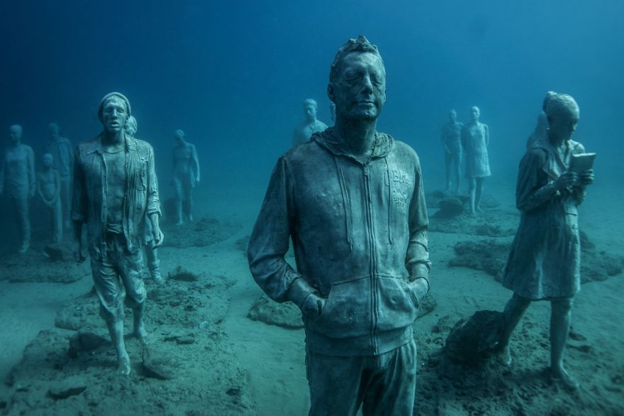

Nằm sâu 22km dưới biển Đại Tây Dương, ít ai ngờ tồn tại một bảo tàng nghệ thuật đương đại Museo Atlantico, bảo tàng dưới nước đầu tiên tại Châu Âu. Nghệ sĩ Jason deCaires Taylor đã tạo ra một chuỗi những bức điêu khắc trên thềm đáy biển. Nổi tiếng nhờ những tác phẩm tố cáo các vấn đề trong xã hội, dự án nghệ thuật quy mô lớn này đã được Jason dựng nên thay một lời nhắn về cuộc khủng hoảng di cư trên toàn thế giới.
Bảo tàng Museo Atlantico gồm 2 không gian riêng biệt, đặc điểm chung duy nhất là mỗi tượng người đều được làm như thể đã bị đóng băng trong một khoảnh khắc xác định nào đó.
Không gian thứ nhất có tên “The Rubicon” gồm một tập hợp 35 bức tượng đang tiến về một chiếc cổng khổng lồ.
Không gian thứ hai có tên “The Raft of Lampedusa”, phản ánh cuộc khủng hoảng nhân đạo đang diễn ra tại Syria. Nghệ sĩ đã tạo nên một cảm giác ám ảnh với những bức tượng người đang tuyệt vọng đợi một con tàu mang thuốc men và đồ tiếp tế đến.
Tác phẩm không được tạo ra để tưởng nhớ những nạn nhân đã thiệt mạng, mà là một lời nhắc nhở nhức nhối về trách nhiệm của tất cả các cộng đồng cư dân sống trên địa cầu. Jason deClaires đã sử dụng tư liệu lịch sử nghệ thuật để làm nền tảng cho toàn bộ tác phẩm của mình, gợi nhắc đến bức tranh “The Raft of Medusa” của họa sĩ người Pháp, Théodore Gericault, miêu tả về những thủy thủ gặp nạn trên một con thuyền vỡ.
Bảo tàng Museo Atlantico tọa lạc dưới đáy biển bên bờ biển đảo Lanzatore (Tây Ban Nha) và sẽ sớm được mở để phục vụ cho những người tham quan hiếu kì.
Thêm một vài bức ảnh về bảo tàng có một không hai dưới lòng nước này
Những bức tượng người đang mờ mịt tiến vào khoảng không vô tận:
Thành phần tượng người điêu khắc rất đa dạng, từ thanh niên, trẻ nhỏ cho đến ông lão:
Tác phẩm thể hiện sự mù mờ của con người về hướng đi đúng cho bản thân cũng như vấn đề nhân đạo toàn cầu:

Bình luận của bạn: